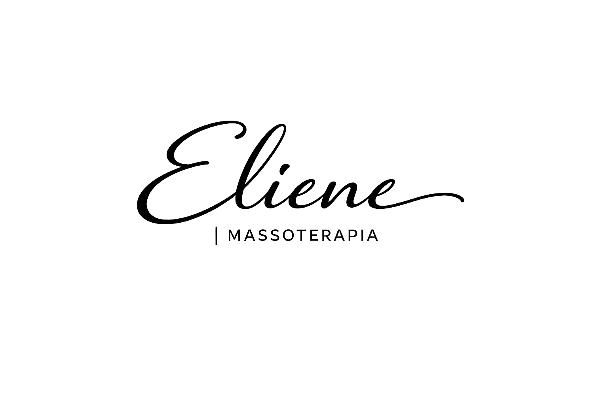
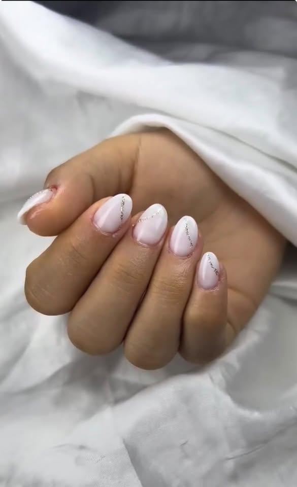
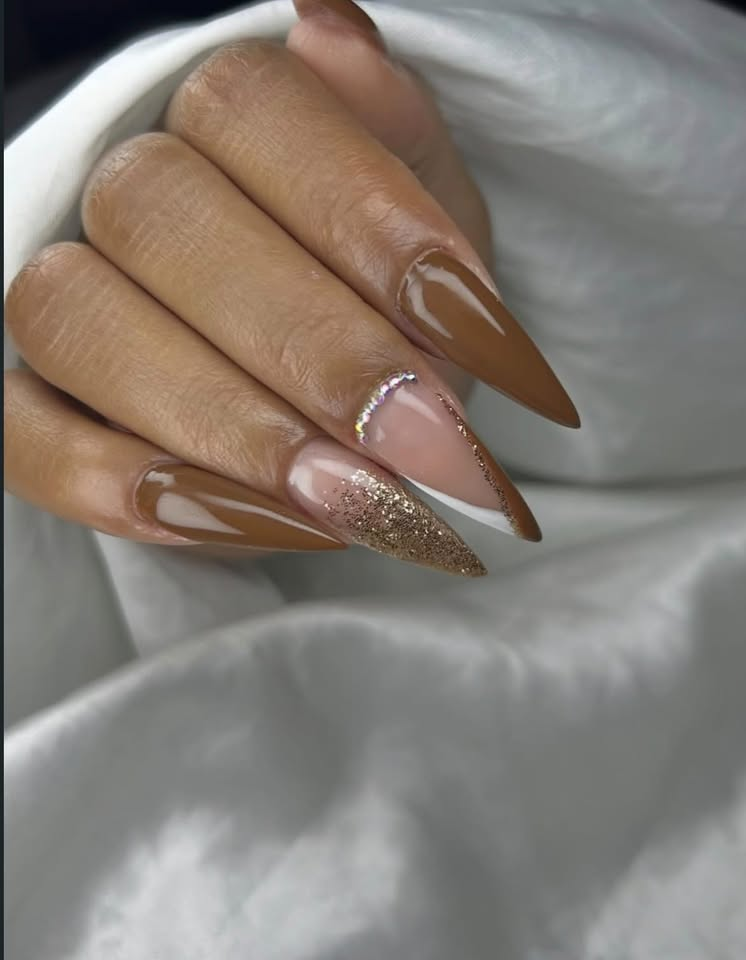
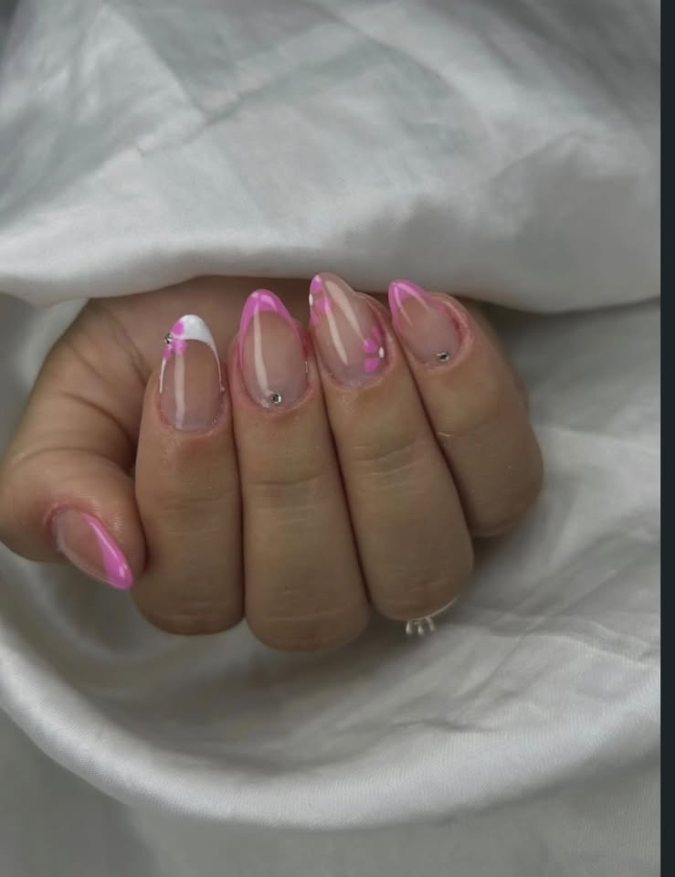
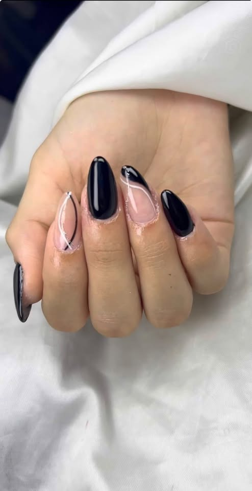
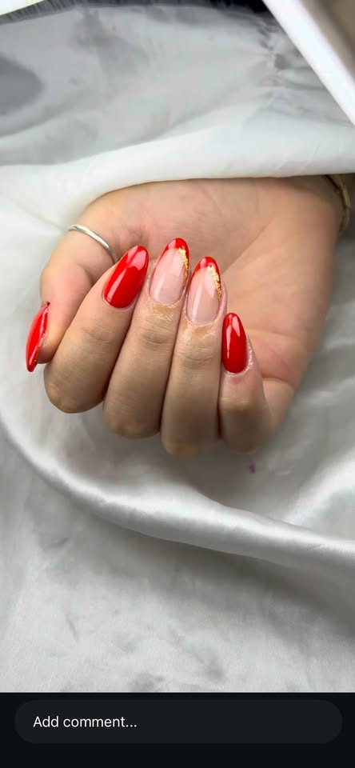
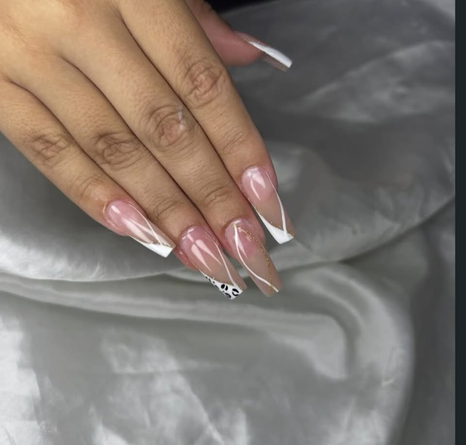

BELEZA • CUIDADO • AUTOESTIMA
Realce a sua beleza feminina com unhas impecáveis.
Com Jaqueline Teixeira Nails, você encontra atendimento personalizado, materiais de qualidade e um trabalho feito com carinho em cada detalhe.

Com Jaqueline Teixeira Nails, você encontra atendimento personalizado, materiais de qualidade e um trabalho feito com carinho em cada detalhe.






A Jaqueline Teixeira Nails é uma clínica de manicure, estética e qualidade de vida. Nosso compromisso é oferecer tratamentos que proporcionem relaxamento, saúde e autoestima.
Contamos com um ambiente acolhedor e produtos de qualidade preparados para atender cada cliente de forma especial, garantindo conforto e resultados de excelência.
Nossa missão é cuidar de você, promovendo equilíbrio físico e emocional através de técnicas modernas e seguras.
Localizado na tranquila região do Tremembé, na Zona Norte de São Paulo, a Jaqueline Nails está no Joana D'Arc, um bairro que combina tranquilidade com acolhimento.
Estamos a 5 minutos do ponto final de ônibus da linha 1709 (Joana D'Arc), próximo à estação Tucuruvi. O trajeto da estação até o bairro leva em torno de 30 minutos.
Com fácil acesso, a Jaqueline Nails oferece um espaço pensado para transformar cada atendimento em uma experiência única de beleza, cuidado e autoestima.
Atendimento: Segunda a sábado
Horário: das 10:00 às 20:00

Escolher a Jaqueline Nails é garantir que suas unhas recebam o melhor cuidado, em um ambiente exclusivo, espaçoso e profissional!
Tabela de Serviços
Tabela de Manutenção